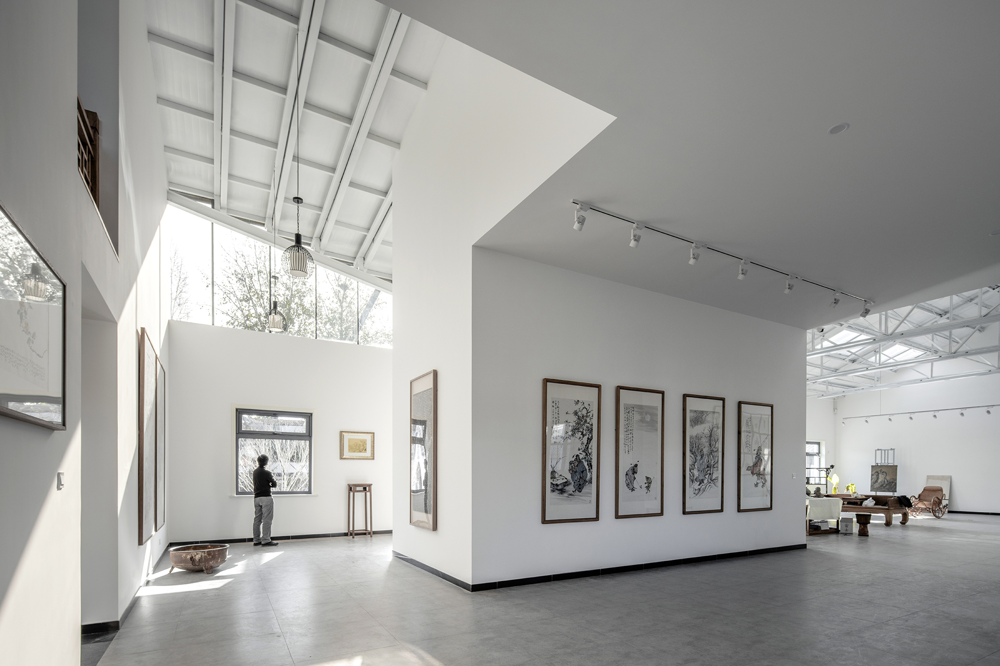

| BIOLOGY | |
| The underappreciated beauty of Arts by Madelaine Lee '24 | |
| An informative article by Madelaine highlights the importance of Arts in our world, and how important it is to never under - appreciate its beauty through many forms.
|
|
|  | |
|
Arts - one of the most underappreciated aspects of life that we have today. You may have all heard of it, but many of you may not know the true beauty and effort that goes into creating Art in its many forms. Whether it comes through sculpture, painting, drawing, music, dance , theatre, photography or cinema, many people from different cultures and areas around the world use Arts to express themselves, however this form of expression has been underappreciated by society, which should definitely not be the case. Some of you may ask: why Arts? What’s so special about it, and why do you choose to study about it? On average, around the world, the percentage of students who choose Arts as a career in the future is only 10%! The majority of matriculating students go into the traditional disciplines of academics such as engineering and medicine. This is because, in an era where technological advancements are being integrated into our everyday lives, making high paying jobs more accessible to get into, it’s easy to lose sight of what the Arts has to offer. Sciences, Mathematics, the technological chase and Business seem to have been esteemed more highly than arts, as people who have a greater aptitude for them are considered smarter and more academically able; which is partly true. I understand that going into a career which surrounds STEM is challenging, however why can’t art be given a chance, and appreciated like them? Why can’t the arts be seen as a profitable and suitable career choice ? Although it may not seem like it, arts are also very important to the future generation as well, just like academic careers, and it should be as profitable too. STEM/ academic skills are vital to the world we live in today, but technology alone, as Steve Jobs famously said, is not enough. A quote from him that sums this up perfectly - “We desperately need the expertise of those who are educated to the human, cultural, and social as well as computational”. I repeat: Arts are just as important for our world ; the media for communication expresses the culture and society, attracts tourism and many more. The under-appreciation of the arts has always been a problem in schools and society, and I believe it needs to be changed. Our world needs to be educated on the benefits that art has to offer. Not only does it help society as a whole, but it is also very important to our mental and emotional health, and that’s why we are all encouraged to be creative and have arts as a subject since we were young. Our teachers opened us up to a world of creative freedom where our imagination was limitless. According to the US National Institute of Health’s website, extensive research found that engagement with creative activities has the potential to contribute towards reducing stress and depression. Art also develops your creativity, making our brains think outside of the box and is basically the driving force behind all other learning as it requires integrated sensory, additional, cognitive, emotional and motor capabilities. Some of you may rebut and say that not everyone has the talent to do art, and I am stressing how somebody doesn’t have to be good at art to enjoy it. Art is done out of enjoyment and advocacy and impact upon a person. Art is also not only beneficial for mental health, it is also a crucial tool for our history. If you open a history book, you would have found paintings from hundreds and thousands of years ago, depicting and recording important events throughout history. Returning to the underappreciation of arts, potential career paths in the arts can be extremely overlooked in our society especially when STEM dominates the most “popular” fields of study. There is a vast amount of careers an individual can go into, including advertising, directing, animating, designing, illustration, art teaching and so much more. Artists dedicate their lives to making pieces of artworks that spark an interest in people, which is something not many people can do. To end this blog, I would like to challenge all of you to do something art-related during the upcoming summer holidays to initiate the creativity- sparks in you. Here is a link below for some ideas of activities you can do. Have fun art- jamming! |
Head back to our home page to like this post! |